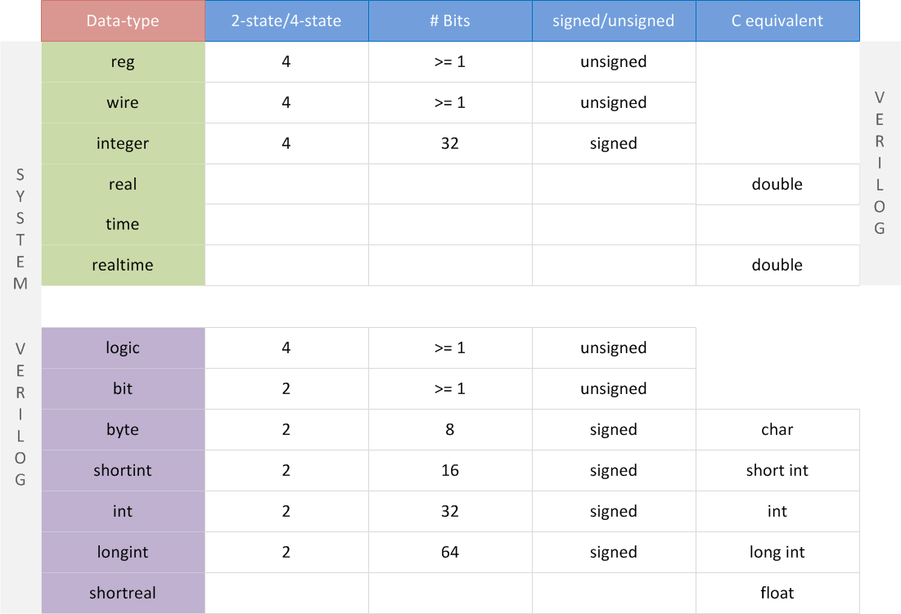
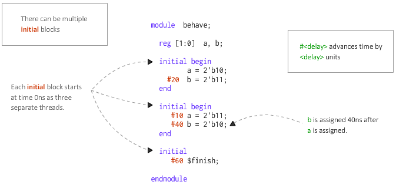

SystemVerilog
Click on a tile to change the color scheme:
1. Preparation
1.1 Environment
IDE: Quartus Lite
Editor on macOS: VSCode + Verilog-HDL/SystemVerilog/Bluespec SystemVerilog + verilator
(Install verilator by Homebrew, and then use it as the linter in the VSCode plugin configuration.)
(Parameters for verilator: -sv --language 1800-2012 --lint-only.
Example: verilator -sv --language 1800-2012 --lint-only mycode.sv)
1.2 Example
A simple example of displaying the sequence "2021040907" with a 7-input digital display:
module seqdisplay (
input logic rst,
input logic clk,
output logic [6:0] natural,
output logic [3:0] even,
output logic [3:0] odd
);
int counter;
logic[3:0] date [0:9] = '{ 4'h2, 4'h0, 4'h2, 4'h1, 4'h0, 4'h4, 4'h0, 4'h9, 4'h0, 4'h7 };
logic[3:0] index = 0;
initial begin
even = 0;
odd = 0;
//date = '{ 4'h2, 4'h0, 4'h2, 4'h1, 4'h0, 4'h4, 4'h0, 4'h9, 4'h0, 4'h7 };
natural = digital_number(0);
end
always @ (posedge clk)
begin
if (rst) begin
counter <= 32'd4_000_000;
index = 0;
natural <= digital_number(date[0]); // display 0
end
else begin
if (counter == 32'd4_000_000) begin // need update
// display the next number
natural <= digital_number(date[index]);
index = index + 4'b1;
if (index == 10) begin
index = 0;
end
counter <= 0;
end
else begin
counter <= counter + 32'd1;
end
end
end
function logic[6:0] digital_number(
logic[3:0] number
);
case(number)
4'h0: digital_number = 7'b1111110;
4'h1: digital_number = 7'b0110000;
4'h2: digital_number = 7'b1101101;
4'h3: digital_number = 7'b1111001;
4'h4: digital_number = 7'b0110011;
4'h5: digital_number = 7'b1011011;
4'h6: digital_number = 7'b1011111;
4'h7: digital_number = 7'b1110000;
4'h8: digital_number = 7'b1111111;
4'h9: digital_number = 7'b1110011;
4'ha: digital_number = 7'b1110111;
4'hb: digital_number = 7'b0011111;
4'hc: digital_number = 7'b1001110;
4'hd: digital_number = 7'b0111101;
4'he: digital_number = 7'b1001111;
4'hf: digital_number = 7'b1000111;
default:
digital_number = 7'bx;
endcase
endfunction
endmodule
2. Basis
C++注释风格
四种基本的值来表示硬件电路中的电平逻辑: - 0：逻辑0或"假" - 1：逻辑1或"真" - x或X：未知 - z或Z：高阻
整数数值表示方法
- 十进制('d 或 'D)，十六进制('h 或 'H)，二进制('b 或 'B)，八进制('o 或 'O)
- 4'b1011 // 4bit 数值
- 32'h3022_c0de // 32bit 的数值
- 下划线表示分割符，增强可读性，只是给人看的
- 最前面不分配位宽编译器会自动分配
等价操作符
==，!=：不能比较x或z；当操作数包含一个 x 或 z，则结果为 x（uncertain）===，!==：全等比较；可以比较x或z，结果为0或1
3. Data Type

两种变量：4-state data types and 2-state data types
Nets and variables are the two main groups of data types. Distinguishing them is the most important part to understand data types in Verilog.
3.1 Nets
Nets are used to connect between hardware entities like logic gates and hence do not store any value on its own.
The most popular and widely used net in digital designs is of type wire.
3.1.1 Wire
表示硬件单元之间的物理连线，由其连接的器件的输出端持续不断地驱动。
wire: can only be driven in assign statements （详细见后面）
assign output = x;
3.2 Variables
A variable on the other hand is an abstraction of a data storage element and can hold values.
3.2.1 Reg
Verilog data-type reg can be used to model hardware registers since it can hold values between assignments.
表示存储单元；保持数据的值直到被改写。
reg: can only be driven in procedural blocks (always, initial, task, function )（详细见后面）
3.3 logic
Based on Verilog, SystemVerilog introduces logic. Except for inout port, we can use logic to replace nearly any wire or reg in Verilog.
3.4 Scalar & Vector
没有声明 range 的 wire 和 reg 默认为 1-bit wide，为scalar。声明位宽的为 vector。
// 中括号内两边都为闭区间
// 倒序；0为最低位
reg [3:0] counter ; //声明4bit位宽的寄存器counter
wire [32-1:0] gpio_data; //声明32bit位宽的线型变量gpio_data
// 以下不常用
wire [8:2] addr ; //声明7bit位宽的线型变量addr，位宽范围为8:2
reg [0:31] data ; //声明32bit位宽的寄存器变量data, 最高有效位为0
切片：
wire[9:0] data_low = data[0:9] ;
addr_temp[3:2] = addr[8:7] + 1'b1 ;
指定起始、位宽和递增/递减方向：
//下面 2 种赋值是等效的
A = data1[31-: 8] ;
A = data1[31:24] ;
//下面 2 种赋值是等效的
B = data1[0+ : 8] ;
B = data1[0:7] ;
用大括号进行拼接
A = 4'b1010 ;
B = 1'b1 ;
Y1 = {B, A[3:2], A[0], 4'h3 }; //结果为Y1='b1100_0011
Y2 = {4{B}, 3'd4}; //结果为 Y2=7'b111_1100
wire[31:0] temp1, temp2 ;
assign temp1 = { byte1[7:0], data1[31:8] }; //数据拼接
assign temp2 = { 32{1'b0} }; //赋值32位的数值0
3.5 Array
数组大小在末尾指定。
wire [7:0] addr_bus [3:0] ; //由4个8bit wire型变量组成的数组
wire data_bit[7:0][5:0] ; //声明1bit wire型变量的二维数组
Array assignment or initialization:
logic[3:0] date [0:9] = '{ 4'h2, 4'h0, 4'h2, 4'h1, 4'h0, 4'h4, 4'h0, 4'h9, 4'h0, 4'h7 };
3.6 Other Notes
Conversion of real to int: 直接赋值会round而不是truncate
int'(2.2 * 3.5) // round
integer $rtoi(real_val) // use system tasks will truncate
4. Building Blocks
4.1 Module
A module is a block of Verilog code that implements a certain functionality.
module <name> ([port_list]);
// Contents of the module
endmodule
// e.g.
// Module called "dff" has 3 inputs and 1 output port
module dff ( input d,
input clk,
input rstn,
output reg q);
// Contents of the module
always @ (posedge clk) begin
if (!rstn)
q <= 0;
else
q <= d;
end
endmodule
A top-level module is one which contains all other modules. A top-level module is not instantiated within any other module.
// Top-level module
module design ( [port_list]); // From design perspective, this is the top-level module
wire _net;
mod1 mod_inst1 ( ... ); // since it contains all other modules and sub-modules
mod2 mod_inst2 ( ... );
endmodule
4.2 Port
input [net_type] [range] list_of_names; // Input port
inout [net_type] [range] list_of_names; // Input & Output port
output [net_type] [range] list_of_names; // Output port driven by a wire
output [var_type] [range] list_of_names; // Output port driven by a variable
module ( input signed a, b,
output c); // unsigned by default
wire a, b; // a, b are signed from port declaration
reg signed c; // c is signed from reg declaration
endmodule
Port connection in module instantiations:
module mydesign ( input x, y, z, // x is at position 1, y at 2, x at 3 and
output o); // o is at position 4
endmodule
module design_top;
wire [1:0] a;
wire b, c;
mydesign d0 ( .x (a[0]), // signal "x" in mydesign should be connected to "a[0]" in this module (design_top)
.y (b), // signal "y" in mydesign should be connected to "b" in this module (design_top)
.z (a[1]),
.o (c));
endmodule
4.3 assign
Signals of type wire or a similar wire like data type requires the continuous assignment of a value.
assign <net_expression> = [drive_strength] [delay] <expression of different signals or constant value>
Rule:
- LHS: scalar or vector of net (e.g.
wire); NO reg! - Whenever any operand on the RHS changes in value, LHS will be updated with the new value.
(It is illegal to drive or assign reg type variables with an assign statement. This is because a reg variable is capable of storing data and does not require to be driven continuously. reg signals can only be driven in procedural blocks like initial and always.)
4.4 always
always @ (event1 or event2) begin
[multiple statements]
end
Multiple initial and always blocks can be included in one module. But they cannot be used recursively.
All of the initial and always blocks in a module are independent and parallel! (regardless of in what order they are defined)
ATTENTION: There is an confusing error that we need to avoid:
(Ref: cannot use an input for if statement in Verilog)
Avoid writing this:
always @ (posedge clk or negedge rst) begin
if(some_var == 0) begin
// ...
end
end
Because, when there are multiple conditional statements in the always conditions, the top "if-else" statement should and can only use the same conditional variables as always statement. (Don't know why.)
Instead, we can split the always block into multiple ones:
always @ (posedge clk) begin
end
always @ (negedge rst) begin
end
4.5 initial
initial will be executed once at t=0.

5. Function
function return_type function_name(
para_type_1 para_name_1, ... // parameters
);
// function body
/* different return methods: */
return 3;
function_name = 3; // assign the value to the function name
endfunction